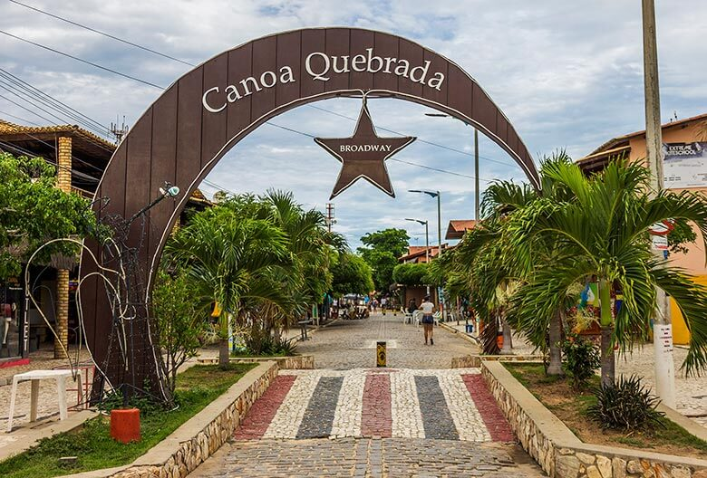
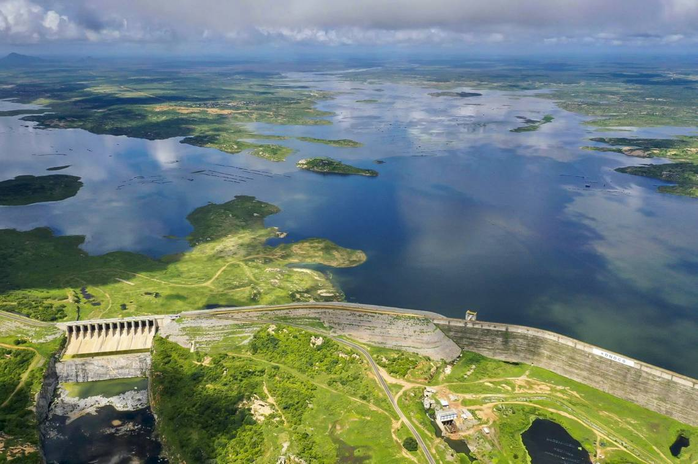
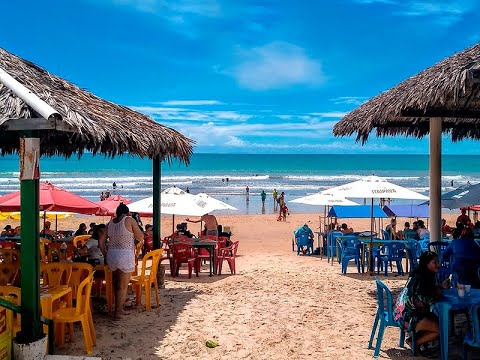
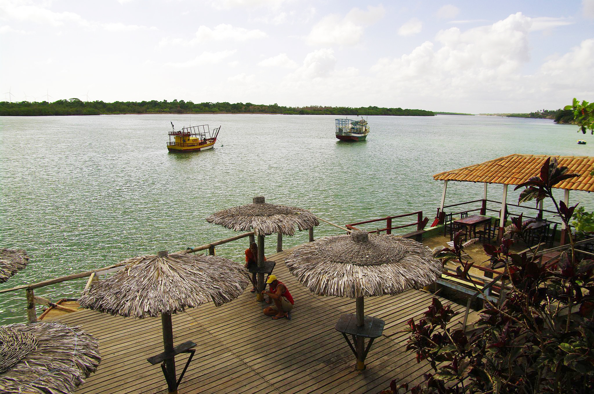
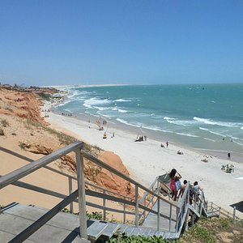
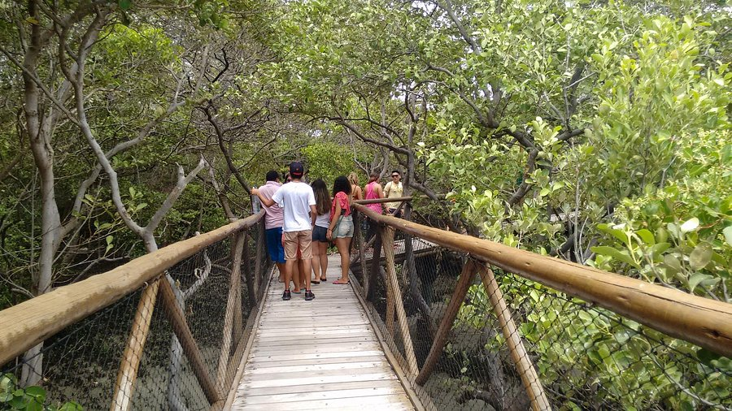

Praia de Redonda

Ver descrição
Uma das praias mais preservadas do litoral cearense, conhecida por suas dunas e lagoas...
Uma das praias mais preservadas do litoral cearense, conhecida por suas dunas e lagoas...

Famosa por suas falésias avermelhadas e pelo icônico símbolo de lua e estrela. O local era uma pacata vila tornou-se um destino internacional na década de 1970. Não deixe de conhecer a movimentada rua Broadway ao anoitecer. (Acessível via buggy ou caminhada).

O maior reservatório de água doce do Ceará, acumulando bilhões de m3 de H2O. Foi construído para substituir redefinir a antiga cidade de Jaguaribara. É um ponto excelente para pesca esportiva e passeios de barco. (Ideal visitar em períodos de cheia).

Um verdadeiro refúgio paradisíaco cercado por dunas avermelhadas e piscinas naturais formadas na maré baixa. Antigamente considerada um ponto isolado, hoje é um ponto imperdível da Rota das Falésias. (Verifique a tábua de marés antes de ir).

Conhecida por suas impressionantes falésias coloridas e pelas fontes de H2O doce que brotam à beira-mar. O local era considerado um ponto de difícil acesso, mas se tornou uma parada obrigatória para passeios de buggy pela Rota das Falésias. Destaque para o visual das dunas que alcançam dezenas de metros de altura (102 m) e a paisagem extremamente fotogênica. (Aproveite para se refrescar nas bicas naturais de água doce).

Patrimônio tombado pelo IPHAN, preservando casarões dos séculos XVIII e XIX (séc. 18-19). As fachadas revestidas de azulejos portugueses foram negligenciadas no passado, mas receberam obras de restauração. Destaque para a Rua Grande. (Entrada gratuita nos monumentos públicos).

Berço do famoso artesanato em garrafas de areia colorida. O que era um ofício artesanal simples se tornou uma referência cultural nacional. Destaque para a escultura do mestre Toinho entalhada nas falésias. (Excelente infraestrutura de barracas de praia).

O ponto onde o maior rio temporário do mundo encontra o oceano (mistura de H2O doce e salgada). O local que servia apenas para pesca agora é um ponto turístico vibrante para a prática de kitesurf e passeios de barco. (Condições de vento excelentes de julho a dezembro).

Tranquila vila de pescadores emoldurada por gigantescas falésias de tom claro. O local era desconhecido pelos turistas, mas foi descoberto por amantes do sossego. Destaca-se por suas águas calmas e cristalinas. (Acesso facilitado por via asfaltada).

Passarela suspensa de madeira com extensão superior a 102 metros, permitindo a observação do ecossistema do mangue. A área sofria com descarte indevido de lixo, mas recebeu proteção comunitária rigorosa para preservar a biodiversidade local. (Caminhada leve e acessível).